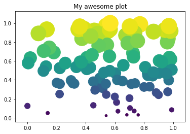
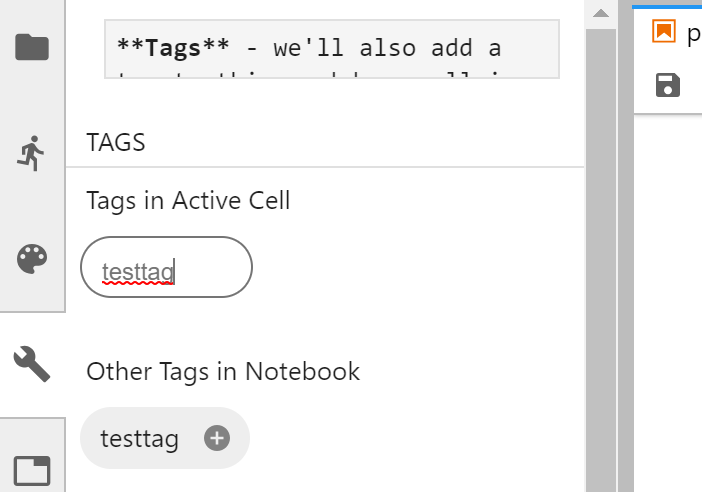
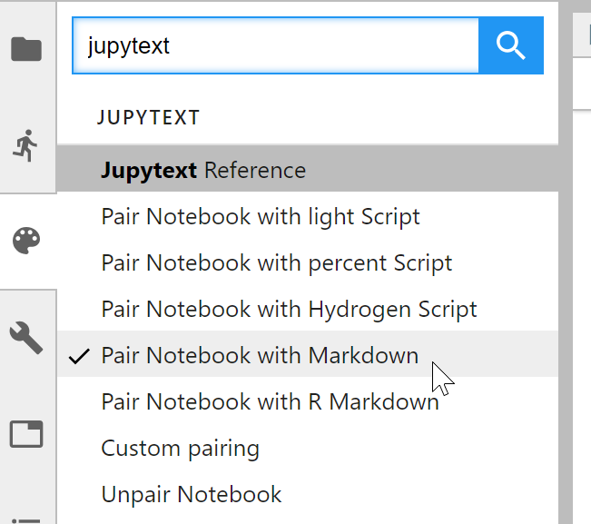
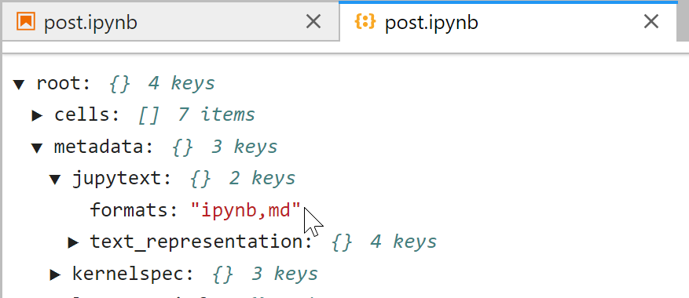

This is a quick post to explore two interesting tools for authoring and publishing quality documents with Jupyter Notebooks. We'll use a two step process and see how far we can get!
We are going to try to do the following:
In the process, we want to include the ability to:
Along the way we may enounter some snags, but let's give it a shot!
For demonstration's sake, here's a code example we'd like to include with our conversions. We'll use Matplotlib (Hunter 2007) and in the Jupyter Notebook (Kluyver et al. 2016).
import numpy as np
import matplotlib.pyplot as plt
data = np.random.random((2, 100))
fig, ax = plt.subplots()
ax.scatter(*data, c=data[1], s=data[1]*1000)
ax.set(title="My awesome plot")[Text(0.5, 1.0, 'My awesome plot')]
Tags - we'll also add a tag to this markdown cell in order to see how it shows up in the text representations.
Using the celltags JupyterLab plugin, there's a nifty UI that lets us do this quickly:

Let's see how this plot looks in the final product!
First off, we'll use Jupytext to maintain a text representation of our notebook at each step of the way.
Jupytext provides a few pieces of functionality. It is first a Converting tool to go from the .ipynb format to a number of text based formats. For this post, we'll use Markdown. This will make it much easier to diff and merge versions of the notebook.
Second, Jupytext is also a Jupyter server extension. What does this mean? We can embed a piece of metadata into the notebook itself that tells Jupytext which formats we'd like to store alongside the .ipynb format. With that metadata in place, Jupytext will first convert the .ipynb format into the format we specify. It will then look for any changes to either of the two files, and automatically mirror that change in the other format.
Let's enable this now.
Note: this assumes you've already install Jupytext, pandoc, and nbconvert
First off, we'll use JupyterLab to do our authoring. Jupytext also has a JupyterLab plugin that allows you to control its behavior per notebook. To enable it, bring up the command palette in JupyterLab by clicking ctrl + shift + c (on windows). Then type jupytext. You should see a list of available commands to control Jupytext.
We'll choose the "Pair notebook with markdown" option, which is a nice default for a human-friendly text representation.

By clicking this option, you tell Jupytext to embed a piece of metadata in the notebook that tells it which formats should exist alongside the .ipynb format. You can inspect this metadata with the JSON viewer:

You should now also see a new markdown file (with the same name as the notebook) once you save the notebook for the first time. These two files are mirrored. Any changes you make to one will be reflected in the other (provided that your Jupyter Server is running).
Let's take a look at the markdown cell. First, we'll look at the markdown sections. Here's how they look:
## A short code example
For demonstration's sake, here's a code example we'd like to include with
our conversions:
```python tags=["hidecode"]
import numpy as np
import matplotlib.pyplot as plt
data = np.random.random((2, 100))
fig, ax = plt.subplots()
ax.scatter(*data, c=data[1], s=data[1]*1000)
ax.set(title="My awesome plot")
```
<!-- #region {"tags": ["testtag"]} -->
**Tags** - we'll also add a tag to this markdown cell in order to
see how it shows up in the text representations.
Using the celltags JupyterLab plugin, there's a nifty UI that lets us do this
quickly:
<img src="images/tags.png" width=500px />
Let's see how this plot looks in the final product!
<!-- #endregion -->As you can see, jupytext embeds the cell-level metadata in different regions that it uses to delineate sections of the noteobok. Code cells are defined by backticks, and markdown cells are delineated by <!-- #region -->.
Also note that there are no image outputs in the markdown - that's desired! If we were to commit these files to a repository, we can use the markdown to see which content has changed, and use the .ipynb to preview the final product.
Finally, you may have noticed above that we added a couple latext-style citations. Let's add the shortcode for rendering a bibliography with Pandoc and see how this looks! For this, we'll use this Pandoc shortcode:
::: {#refs} :::
Note that these citations take this form: @mycitation and the citation data is stored in bibliography.bib.
Now that we've got some nice content for our document, let's try converting it to some common publishing outputs. We'll use pandoc for this, because of its native document conversion tools.
First off, we'll convert the page to HTML. We'll use the following command:
# Now convert with pandoc
!pandoc --filter pandoc-citeproc --bibliography ./bibliography.bib\
-f ipynb+citations+link_attributes \
--extract-media ./extracted \
-s \
-M pagetitle="My title" \
-M link-citations="true" \
./post.ipynb -o post.html
# Now copy the output to a new folder (we had to create the new file in this folder so the linking worked properly)
!rm -rf published
!mkdir published
!mv ./post.html ../published
!mv ./extracted ../published/extractedHunter, J. D. 2007. “Matplotlib: A 2D Graphics Environment.” Computing in Science & Engineering 9 (3): 90–95. https://doi.org/10.1109/MCSE.2007.55.
Kluyver, Thomas, Benjamin Ragan-Kelley, Fernando Pérez, Brian Granger, Matthias Bussonnier, Jonathan Frederic, Kyle Kelley, et al. 2016. “Jupyter Notebooks – a Publishing Format for Reproducible Computational Workflows.” Edited by F. Loizides and B. Schmidt. IOS Press.